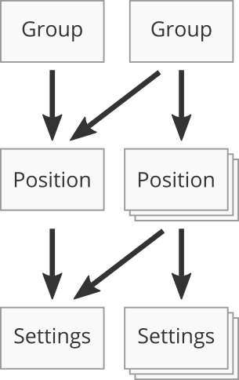

Introduction
Welcome to the Super-Dimensional-Acquistion (SDA) documentation! With SDA you can control your microscope programatically with MATLAB. SDA is powered by and made possible by Micro-Manager, the open-source software by Open Imaging. SDA is part of the p53-Cinema project developed by the Lahav Lab.
Installation
This a guide to installing Super-Dimensional-Acquisition on a Windows machine.
- Install Micro-Manager
- Use the latest version of Micro-Manager. Micro-Manager can be downloaded here.
- Install Python
- Use the latest version of Python 3.
- Modify the Windows Path Variable
- From the Windows Search Bar, enter “environment variables” and select the best match to “Edit the system environment variables”. From the Systems Properties dialog box select “Environment Variables…” in the lower right. Edit the variable named “Path”. Add 2 new lines that point to the directory with Python and the Python sub-directory Scripts; e.g. “C:\Python35” and “C:\Python35\Scripts”.
- Download SDA from Github
- Download the SDA zip file and extract the contents.
- Modify the MATLAB Path
- Within MATLAB in the Enviroment section of the Toolstrip there is a “Set Path” icon. Selecting this icon will open a window where the SDA files extracted from the prior step can be added to the MATLAB path. Select “Add with Subfolders…” and save before exiting.
- Modify the MATLAB Javaclass Path
- The MATLAB Javaclass Path is a separate path from the one modified in the prior step. From the command line run the scrip
core_setup_javaclasspathand input the static path to the Micro-Manager installation as a string. Then navigate to the MATLAB prefdir from a Windows File Explorer and create (or modify) a file named “javaclasspath.txt”. Copy the contents of “MMjavaclasspath.txt” into the other file. MATLAB must be restarted before it recognizes this modification.
- The MATLAB Javaclass Path is a separate path from the one modified in the prior step. From the command line run the scrip
Microscope
An object created with the microscope_class is a wrapper for the instantiation of Micro-Manager within MATLAB. The methods of microscope have been created to handle common tasks, such as moving a motorized stage or snapping and image.
Snapping an Image
Try out this code to snap an image:
microscope = sda.microscope; %If a microscope object already exists, skip this.
microscope.snapImage;
imagesc(microscope.I);
Capturing an image and interacting with this data in MATLAB requires just a few steps.
GPS: Group, Position, Settings
The organization of the multi-dimensional-acquisition is encompassed within the GPS hierarchy, which is the relationship between groups, positions, and settings.
- Group: a collection of positions
- Position: a collection of settings in addition to the (x,y,z) of a motorized stage, objective, and Perfect Focus System by Nikon.
- Settings: the parameters and variables that describe the imaging conditions of the microscope. The settings also specifiy z-stacks.
The relationship between each layer of the GPS conforms to the following rules:
- A valid Group must contain at least 1 Position and all Positions must be valid.
- A valid Position must contain at least 1 Settings. A Position is not valid if it is not contained within a group.
- A Settings is valid if it is contained within at least 1 Position.
- Positions and Settings can belong to multiple Groups and Positions, respectively.
- The default order of acquisition is the order of creation. Groups have priority over Positions.
- Duplicate Positions and Settings cannot be contained within unique Groups and Positions, respectively.

When the SDA is executed the commands that order of events is determined by 5 functions that can be customized for each Group, Position, or Settings. GPS hierarchy, or tree, is travered depth-first. Starting with the first Group all of its Positions are executed before moving to the next Group. Additionally, within each Position all of its Settings are executed before moving on to the next Position. Importantly, Groups and Positions have 2 functions each: one the triggers just before changing to a Group or Position and another just after leaving a Group or Position. Settings have a single function.